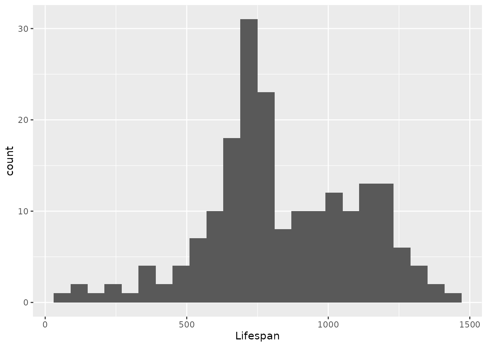
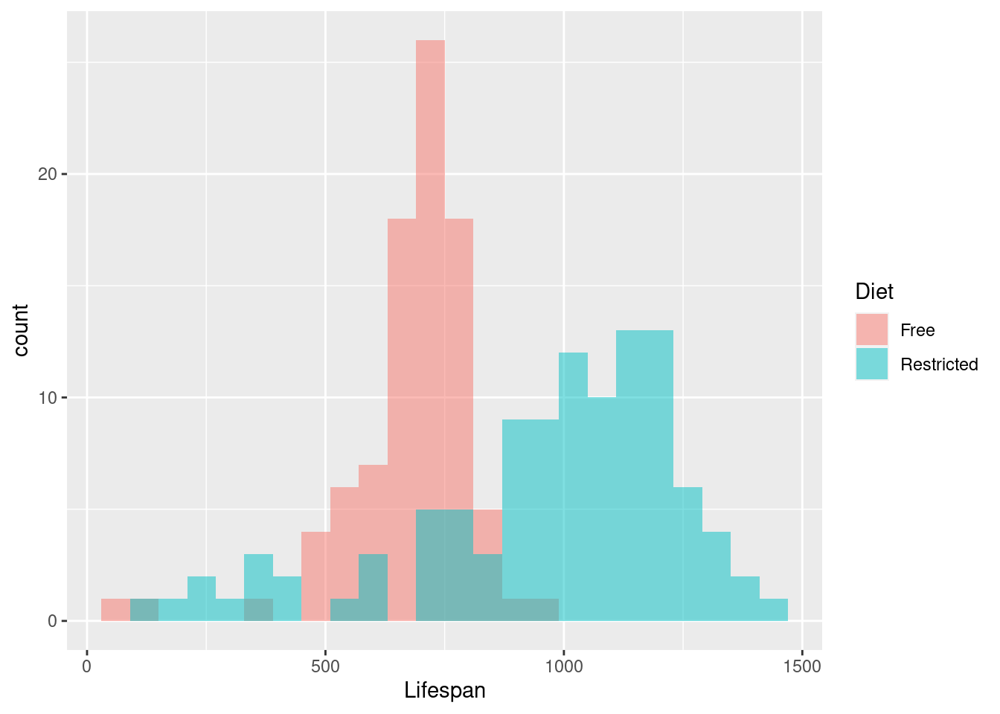
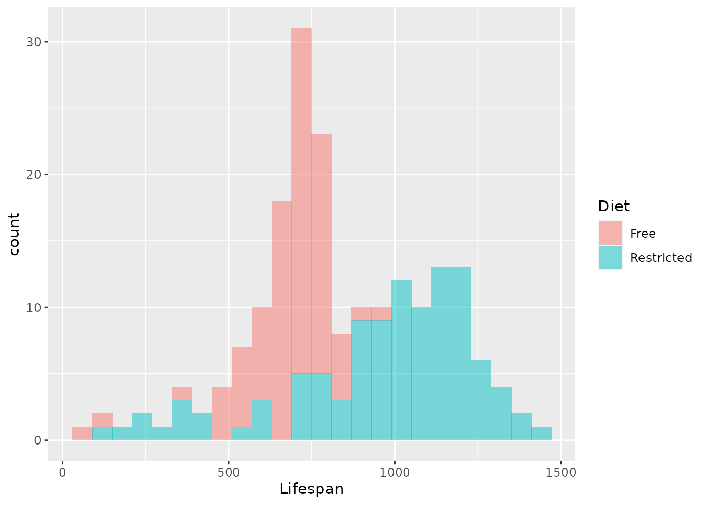
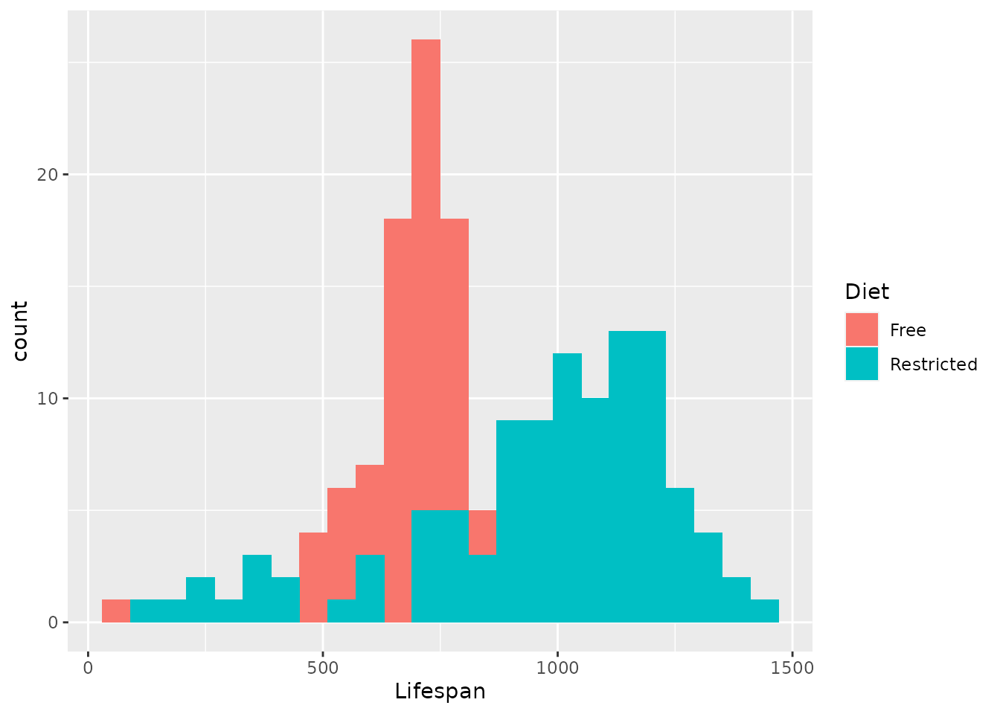

Lab 2 Central tendency and variability
In this session, we will learn how to use R to calculate descriptive statistics. Specifically, these are statistics describing central tendency and variability. We saw how complicated it can be to calculate some of these things by hand. While it is good to understand what is going on “behind the scenes,” doing such calculations by hand is not only time consuming but prone to error. If you make a typo at one step, that little error gets magnified as you keep going.
Besides, as we saw last week, most of the time, dataset are large and it is simply unreasonable to calculate a mean of 1300 numbers by hand. Luckily, computers are great at doing the kinds of mechanical, repetitive, mindless steps involved.
But if the computer is great at mindless stuff, that means us people have to be better at mindful stuff. We need to think about what these numbers mean and why they may be important for understanding the world.
Another part of computers being mindless is that they will always do exactly what you tell them to do, unless they can’t. So we have to be extremely careful when we write code because, just like making a mistake doing calculations by hand, a mistake in code can propagate into a mistake in the result. Think about your neighbor’s obnoxious dog—it is not the dog’s fault it is obnoxious, it is the fault of the neighbor for doing a poor job training her.
Why is doing statistics with a computer any better, if we still have to worry about making a mistake? Because the computer is fast and can deal with a lot more data than we can.
The primary skills developed in this activity are:
- Using R to calculate central tendency
- Median
- Mean
- Using R to calculate variability
- Variance
- Standard deviation
2.1 Simple cases
2.1.1 Central tendency
Imagine that we are thinking about selling a new product. We demonstrate the product to five people in a focus group, each of whom gives us a rating of the product on a scale from 1 (very dissatisfied) to 9 (very satisfied)10. Their ratings, in no particular order, are 6, 9, 5, 5, and 7.
Recall that the mean is defined by the formula \(\bar{X} = \frac{\sum_{i = 1}^N X_i}{N}\), where each \(X_i\) is a measurement and \(N\) is the number of measurements. We can expand the summation \(\sum_{i = 1}^N X_i\) into \(X_1 + X_2 + X_3 + \cdots + X_N\), where the subscripts (1, 2, 3, etc.) indicate which of the measurements is being added to the total sum.
We can use R to do this calculation by basically writing out in R how we would write it out if we were finding the mean by hand. Then we let R do the actual arithmetic.
(6 + 9 + 5 + 5 + 7) / 5## [1] 6.4We have basically turned R into a calculator. R can do all the typical things a calculator can do, like addition (+) and division (/), as well as subtraction (-) and multiplication (*). We used the parentheses to tell R to add up all the numbers before dividing them by 5.
But that’s still pretty clumsy. R gives us a more elegant way to find the mean of a set of measurements:
mean(c(6, 9, 5, 5, 7))## [1] 6.4Nice! How did that work? If you tell R mean(), it will give you the mean of whatever is inside those parentheses. But what is that c() thing? The c() tells R to collect the numbers together. It tells R to treat them collectively; in our mathematical notation, the c() tells R that all the things inside those inner parentheses are to be treated like \(X_i\)’s, a set of measurements all on the same variable.
Can we keep using this trick? Let’s use R to find the median:
median(c(6, 9, 5, 5, 7))## [1] 6Worked like a charm! Again, we had to tell R that our numbers were to be treated like a collection, and we told R to find the median of that collection of numbers.
Now imagine we get a sixth person to rate our product and they give it an 8. Now our data consist of a set of six ratings (6, 9, 5, 5, 7, 8). We can again use R to find the new mean11
## [1] 6.666667and the median12
## [1] 6.666667Sadly, R does not give us a straightforward way to get the mode, so that’s something we still have to figure out on our own.13
2.1.2 Variability
R helpfully provides similar methods for calculating variability. For example, we can calculate the variance of the focus group ratings like this
var(c(6, 9, 5, 5, 7, 8))## [1] 2.666667Notice that R abbreviates variance to just var, but otherwise the code looks basically the same as we used for the mean and median. When you ask R for the variance, you get the so-called “sample” variance, given by \(\frac{\sum_{i = 1}^N \left( X_i - \bar{X} \right)^2}{N - 1}\).
Similarly, we can get the standard deviation by swapping out var for sd (short for standard deviation)
sd(c(6, 9, 5, 5, 7, 8))## [1] 1.632993We can verify that this is the square root of the variance. R has another “function” called sqrt that gives you the square root of whatever is in the parentheses that follow it. Check it out:
sqrt(var(c(6, 9, 5, 5, 7, 8)))## [1] 1.632993Notice that you can “wrap” things in parentheses and put function names in front, like we put the sqrt in front of the var.
2.2 Dealing with real data
The examples above illustrated one way we can use R to calculate descriptions of central tendency and variability. These are useful when we have a small amount of data that we can type in without risk of error, but that’s almost never the situation we have to deal with in applying statistics to real data.
2.2.1 Setting the stage
Before we can get to work with real data, we have to open up the right toolbox. In R, this is done by retrieving a “package” from R’s “library.” Remember that one of the nice things about R is that there are so many packages available that each contain helpful functions. Of course, the downside is that we need to tell R to open up those packages, but this isn’t too hard.
Specifically, we’ll need to open the “tidyverse” package:
library(tidyverse)## ── Attaching packages ─────────────────────────────────────── tidyverse 1.3.0 ──## ✓ ggplot2 3.3.3 ✓ purrr 0.3.4
## ✓ tibble 3.0.5 ✓ dplyr 1.0.3
## ✓ tidyr 1.1.2 ✓ stringr 1.4.0
## ✓ readr 1.4.0 ✓ forcats 0.5.0## ── Conflicts ────────────────────────────────────────── tidyverse_conflicts() ──
## x dplyr::filter() masks stats::filter()
## x dplyr::lag() masks stats::lag()R will tell you a bunch of stuff, including something about “conflicts.” This isn’t a big deal for us, R is just saying that we have some tools with the same name, and it calls this a “conflict.” R is just trying to keep you informed.
The tidyverse package is one that we will be using a lot. It contains a lot of statistical tools and tools for making graphics that will be very useful for us throughout the course.
2.2.2 Getting the data
The data we will be looking at come from a study by Yu et al. (1982). They studied the lifespan of rats with two different diets: One group of rats was allowed to eat freely, however they wanted; another group was fed on a restricted diet with only about 60% of the calories that the free-eating rats had.
We need to get this data into R. The following code will import the data into your current R session:
rats <- read_csv('https://raw.githubusercontent.com/gregcox7/StatLabs/main/data/ratlives.csv')##
## ── Column specification ────────────────────────────────────────────────────────
## cols(
## Diet = col_character(),
## Lifespan = col_double()
## )In your “Environment” panel in the upper right, you’ll see a new entry called “rats.” This is the data we just imported. Click on it to have a look at the data, which will appear in the upper left. There are just two variables in this dataset, Diet and Lifespan (measured in days)14.
2.2.3 Visualizing the data
Numerical techniques for describing data, like means and variances, are useful compact descriptions of potentially complex distributions. But while they can be quick and easy ways to communicate (even if they are not always quick and easy to calculate), it is still important to get a sense of what the data really look like. As a result, we will never abandon our friends from last week, the bar chart and histogram. It is essential to visualize your data prior to doing any kind of quantitative analyses, since visualizing the data helps us understand what those quantities mean.
Just like last week, we can construct a histogram to see how long different rats lived depending on their diet.
rats %>%
ggplot(aes(x=Lifespan)) +
geom_histogram(binwidth=60)
So far, so good. The code above takes our data, puts the “Lifespan” variable along the \(x\) axis, and makes a histogram by putting the observed rat lifespans into “bins” that are 60 days wide.15
The histogram illustrates some interesting features of the data, notably that it appears to be bimodal16. Is this surprising? Remember that our dataset actually consists of two groups of rats with different diets, so maybe that is why the histogram looks the way it does.
We can use a new “aesthetic” to split the histogram up so we can see the two different groups:
rats %>%
ggplot(aes(x=Lifespan, fill=Diet)) +
geom_histogram(binwidth=60, position = "identity", alpha=0.5)
There are a couple things that got added there, especially in that last line, that probably aren’t that clear. First, the new “aesthetic”: In the second line, we tell R to put Lifespan along the x axis like before, but now we are also telling R to fill the histograms with a different color depending on the Diet variable. Now, what about that other stuff in the third line? Now, in addition to telling R how wide the bins of our histogram should be (binwidth = 60), position = "identity" tells R that it should overlay the two histograms. If you don’t tell R to do that, it will instead “stack” them, like this:
rats %>%
ggplot(aes(x=Lifespan, fill=Diet)) +
geom_histogram(binwidth=60, alpha=0.5)
Which is kind of confusing. What about alpha = 0.5? This gets a bit into computer graphics, but alpha represents the opacity of something. If alpha = 1, this means completely opaque, you can’t see anything through it. If alpha = 0, this means completely transparent (invisible). So alpha = 0.5 is halfway in between. Because we are putting the two histograms on top of one another, we want them to be a little bit see-through so one doesn’t obscure the other. See what happens when we leave out that line (and alpha = 1 by default):
rats %>%
ggplot(aes(x=Lifespan, fill=Diet)) +
geom_histogram(binwidth=60, position = "identity")
Again, harder to see what is going on.
2.2.4 Central tendency
By plotting the lifespans of the two groups of rats on separate but overlapping histograms, we can see there are some important differences between them.17 Now we can describe those differences numerically.
We saw last week how to summarize data in terms of counting the frequency with which different values were observed. The code to summarize the central tendency of a dataset is similar:
rats %>%
group_by(Diet) %>%
summarize(M = mean(Lifespan))## # A tibble: 2 x 2
## Diet M
## * <chr> <dbl>
## 1 Free 684.
## 2 Restricted 969.And just like that, R has calculated the mean lifespans of the rats in each group.18 Looking at the code, the first two lines are similar to how we got R to make frequency tables last time: We tell R what data we are working with (rats), tell R to group the data by a particular variable (Diet), and then tell R to make us a summary. The last line is again a summarize instruction, but it looks a bit different. Last time, we put N = n() inside the parentheses, which told R to count the number of individuals in each group and put those counts in a column labeled N. By saying M = mean(Lifespan), we are telling R to find the mean lifespan of the rats in each group and put the result in a column labeled M. We replaced N with M and n() with mean(Lifespan). In so doing, we changed the label (N to M) and changed the way we summarized the data (from n(), which just counted, to mean(Lifespan) which finds the mean Lifespan).
Just like we did with the simple data above, we can swap out mean in the last line for different summaries. For example, we can create a table that gives us the median lifespan of the rats in each group:19
## # A tibble: 2 x 2
## Diet M
## * <chr> <dbl>
## 1 Free 710
## 2 Restricted 1036.Comparing the mean to the median gives us a sense of the extent to which the distributions of lifespans of the two groups of rats are skewed.20
2.2.5 Variability
We can also make a summary table with multiple descriptive statistics, including both measures of central tendency and of variability. The following code gives us a table that reports not just the mean lifespans of rats in each group, but the standard deviation of those lifespans as well:
rats %>%
group_by(Diet) %>%
summarize(M = mean(Lifespan), SD = sd(Lifespan))## # A tibble: 2 x 3
## Diet M SD
## * <chr> <dbl> <dbl>
## 1 Free 684. 134.
## 2 Restricted 969. 285.And, of course, we can create a table that summarizes the mean, median, standard deviation, and variance all at once!21
## # A tibble: 2 x 5
## Diet Mean Median Variance SD
## * <chr> <dbl> <dbl> <dbl> <dbl>
## 1 Free 684. 710 17979. 134.
## 2 Restricted 969. 1036. 80986. 285.These numerical summaries of central tendency and variability provide a concise description of the lifespans of rats under the two different diets. This description helps us see whether there is any benefit to a restricted diet on lifespan.22
2.3 Wrap-up
Today we saw how to use R to find various numerical descriptive statistics, both in simple cases and with real data. We focused on two measures of central tendency, the mean and the median, as well as two measures of variability, the variance and the standard deviation. We saw how these quantities are useful in summarizing complex data, making it easier to draw conclusions about differences between groups. We also learned a new trick about how to visualize histograms from multiple groups.
Is this measure continuous or discrete? What is the scale of measurement?↩︎
What is the code that calculates the new mean? Hint: Try modifying the collection of observed values within the parentheses in the code above.↩︎
What is the code that calculates the new median? Hint: Try modifying the collection of observed values within the parentheses in the code above.↩︎
Just by looking at the observed values we have, what is the mode of the focus group’s ratings?↩︎
For each of these variables, are they a) continuous or discrete? b) which scale are they measured on (nominal, ordinal, interval, or ratio)?↩︎
Compare the code we just used with the code we used to make a histogram of the ages of Titanic passengers last week. What is different and what is similar?↩︎
Based on the histogram, roughly where do the two modes seem to be?↩︎
Based on the histogram, does it seem like one group of rats tends to live longer the the other? Do the groups seem to have similar amounts of variability?↩︎
Which group has the higher average lifespan? Does this make sense based on what you saw in the histogram?↩︎
What code would produce this table? Hint: it requires modifying the name of the central tendency measure in the last line of the previous bit of code.↩︎
Compare the median lifespan to the mean lifespan in each group. Based on this comparison, would you say that lifespans in either group are symmetric, positively skewed, or negatively skewed?↩︎
What code would produce the table below? Hint: See how we added a column for the standard deviation? And remember how we told R to find different descriptive statistics above?↩︎
What would you conclude? Is there a benefit or harm for the restricted diet over normal free diet? Is this true for every rat? Is the size of any benefit or harm big or small relative to how much rat lifespans tend to vary?↩︎